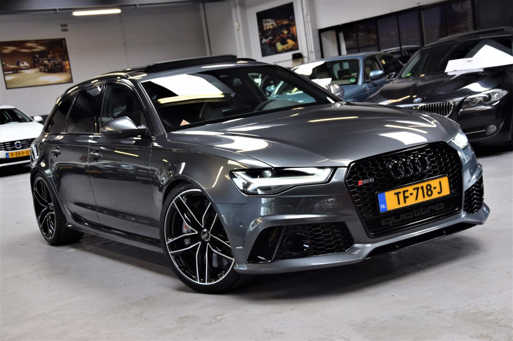

De maker van de website is Martijn Bolt en de plaatjes komen vanuit mijn laptop zelf, die heb ik al een keer eerder verzameld.
De onderstaande bronnen heb ik gebruikt voor mijn website. Hopelijk heeft u er plezier van.
BMW M5Mercedes-Benz E-klasse Audi RS6 Avant HTML toturialW3 validator
